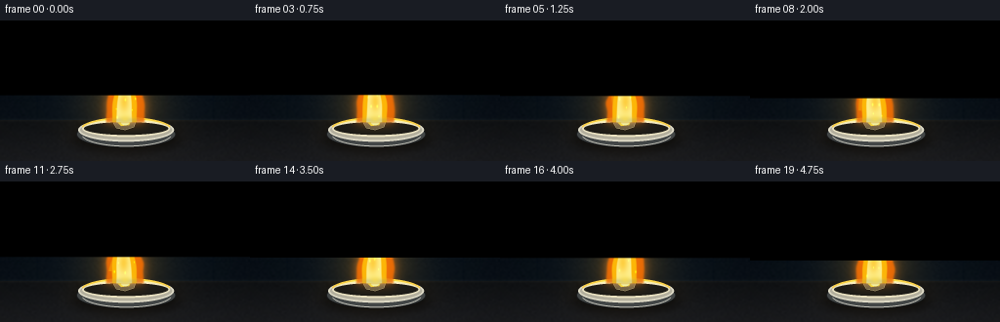
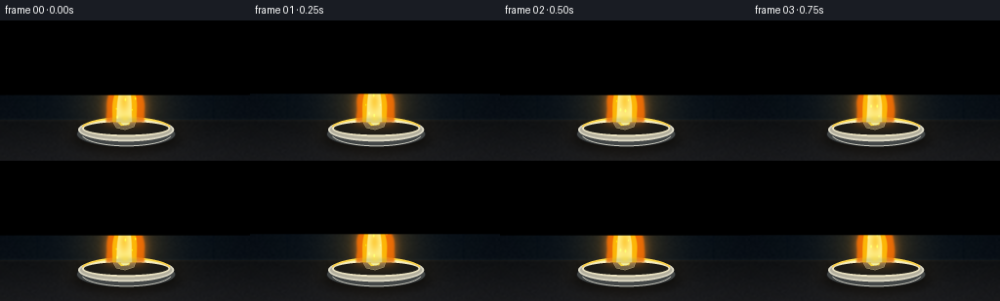

CODING AGENTS AS PIXEL WORLD MODELS
traex/GPT-5.6-Sol · phygen_129
点击播放 · 原生 RGB 像素
逐轮保存的候选
回放视频、检查图与代码变化。
每份候选均可单独播放。实际图片检查记录在下方工具轨迹中。
候选 01播放与检查图
点击播放 · 原生 RGB 像素


展开代码变化
--- 上一保存版本
+++ 本次保存版本
@@ -0,0 +1,216 @@
+from pathlib import Path
+import json
+import numpy as np
+import cv2
+from PIL import Image, ImageDraw, ImageFilter
+import artifact_io
+
+# Deterministic procedural rendering of sodium burning with its characteristic
+# saturated yellow-orange flame. Everything is synthesized from prompt text.
+ROOT = Path(__file__).resolve().parent
+SPEC = json.loads((ROOT / "task_spec.json").read_text())
+W, H = int(SPEC["width"]), int(SPEC["height"])
+N, FPS = int(SPEC["frames"]), float(SPEC["fps"])
+S = 3 # antialiasing supersampling
+w, h = W*S, H*S
+rng = np.random.default_rng(589)
+
+yy, xx = np.mgrid[0:h, 0:w].astype(np.float32)
+X, Y = xx/S, yy/S
+
+
+def alpha_over(img, color, alpha):
+ """Alpha composite a solid RGB color over a float RGB image."""
+ a = np.clip(alpha, 0, 1)[..., None].astype(np.float32)
+ return img*(1-a) + np.asarray(color, np.float32)*a
+
+
+def add_glow(img, color, alpha):
+ return np.clip(img + np.asarray(color, np.float32)*alpha[..., None], 0, 255)
+
+
+def soft_ellipse(cx, cy, rx, ry, feather=1.0):
+ d = np.sqrt(((X-cx)/rx)**2 + ((Y-cy)/ry)**2)
+ return np.clip((1.0-d)*min(rx, ry)/feather, 0, 1)
+
+
+def coherent_noise(frame, coarse_h=18, coarse_w=32):
+ """Loopable temporally interpolated low-frequency turbulence."""
+ u = frame / N * 4.0
+ k = int(np.floor(u)); f = u-k
+ f = f*f*(3-2*f)
+ def field(seed):
+ r = np.random.default_rng(1000+seed)
+ z = r.normal(0, 1, (coarse_h, coarse_w)).astype(np.float32)
+ return cv2.resize(z, (w, h), interpolation=cv2.INTER_CUBIC)
+ return (1-f)*field(k) + f*field(k+1)
+
+
+# Static cinematic laboratory background.
+base = np.zeros((h, w, 3), np.float32)
+vert = np.clip(Y/H, 0, 1)
+base[..., 0] = 5 + 6*vert
+base[..., 1] = 10 + 9*vert
+base[..., 2] = 15 + 12*vert
+# A very subtle cool pool of ambient light behind the flame.
+amb = np.exp(-(((X-129)/105)**2 + ((Y-58)/83)**2)*1.8)
+base += amb[..., None] * np.array([4, 8, 11], np.float32)
+# Background wall seams, deliberately dim and out of focus.
+for seamx in [38, 218]:
+ line = np.exp(-((X-seamx)/1.1)**2) * (Y < 105)
+ base -= line[...,None] * np.array([1.8, 1.4, .7])
+line = np.exp(-((Y-82)/1.25)**2)
+base -= line[...,None] * np.array([1.4, 1.1, .6])
+# Bench plane and horizon.
+bench = Y >= 102
+base[bench] = np.stack([
+ 16 + 13*(Y[bench]-102)/(H-102),
+ 18 + 12*(Y[bench]-102)/(H-102),
+ 20 + 13*(Y[bench]-102)/(H-102)], axis=-1)
+horizon = np.exp(-((Y-102)/1.5)**2)
+base += horizon[...,None] * np.array([7,7,6])
+# Fine sensor/stone texture (static, subtle).
+tex = cv2.resize(rng.normal(0,1,(72,128)).astype(np.float32),(w,h),interpolation=cv2.INTER_CUBIC)
+base += tex[...,None]*0.85
+# Soft bokeh points far in the background.
+for bx, by, br, col in [(28,38,4,(8,16,18)),(227,28,6,(10,17,17)),(198,70,3,(8,14,14)),(57,65,2,(10,15,16))]:
+ q=np.exp(-(((X-bx)/br)**2+((Y-by)/br)**2)*1.5)
+ base += q[...,None]*np.array(col)
+base = np.clip(base, 0, 255)
+
+# Draw reusable dish geometry at high resolution with antialiased PIL paths.
+def draw_dish_scene(arr, phase):
+ im = Image.fromarray(np.uint8(np.clip(arr,0,255)), 'RGB')
+ d = ImageDraw.Draw(im, 'RGBA')
+ sc=S
+ # Deep soft cast shadow.
+ shadow = Image.new('RGBA',(w,h),(0,0,0,0)); sd=ImageDraw.Draw(shadow,'RGBA')
+ sd.ellipse((74*sc,108*sc,184*sc,134*sc),fill=(0,0,0,145))
+ shadow=shadow.filter(ImageFilter.GaussianBlur(5*sc))
+ im=Image.alpha_composite(im.convert('RGBA'),shadow)
+ d=ImageDraw.Draw(im,'RGBA')
+ # Ceramic evaporating dish: base, body, rim and dark inner bowl.
+ d.ellipse((78*sc,103*sc,180*sc,130*sc), fill=(70,74,74,255), outline=(25,27,28,255), width=1*sc)
+ d.ellipse((80*sc,100*sc,178*sc,124*sc), fill=(185,181,163,255), outline=(228,224,204,255), width=2*sc)
+ d.ellipse((84*sc,102*sc,174*sc,119*sc), fill=(39,38,32,255), outline=(239,231,198,255), width=2*sc)
+ d.ellipse((88*sc,104*sc,170*sc,117*sc), fill=(29,28,24,255))
+ # Warm flame reflection along the ceramic rim.
+ d.arc((82*sc,99*sc,176*sc,124*sc), 195, 345, fill=(255,211,72,220), width=2*sc)
+ d.arc((87*sc,101*sc,171*sc,119*sc), 203, 337, fill=(255,244,173,150), width=1*sc)
+ # Cool ceramic highlight on front lip.
+ d.arc((83*sc,103*sc,176*sc,129*sc), 12, 167, fill=(208,207,196,115), width=1*sc)
+ # Small irregular sodium piece, metallic at edges and molten/glowing at center.
+ pts=[(116,105),(120,100),(130,99),(139,103),(137,109),(128,112),(119,110)]
+ pts=[(int(a*sc),int(b*sc)) for a,b in pts]
+ d.polygon(pts, fill=(93,89,70,255), outline=(220,213,164,255))
+ d.polygon([(120*sc,104*sc),(125*sc,101*sc),(134*sc,103*sc),(132*sc,107*sc),(124*sc,108*sc)],
+ fill=(238,198,61,255))
+ d.ellipse((124*sc,102*sc,132*sc,107*sc), fill=(255,245,176,245))
+ d.line([(119*sc,104*sc),(125*sc,101*sc),(132*sc,102*sc)], fill=(255,255,222,180), width=sc)
+ return np.asarray(im.convert('RGB'),dtype=np.float32)
+
+frames=[]
+for fi in range(N):
+ t=fi/FPS
+ phase=2*np.pi*fi/N
+ img=base.copy()
+
+ # The fire illuminates the wall, bench, and dish surroundings.
+ light=np.exp(-(((X-128)/48)**2+((Y-84)/43)**2)*1.25)
+ pulse=0.96+0.035*np.sin(phase*3.0+0.5)+0.018*np.sin(phase*7.0)
+ img=add_glow(img,(47,30,2),light*pulse)
+ reflection=np.exp(-(((X-128)/51)**2+((Y-119)/12)**2)*2.0)*(Y>104)
+ img=add_glow(img,(38,25,3),reflection*pulse)
+
+ img=draw_dish_scene(img,phase)
+
+ # Subtle rising smoke behind the luminous flame.
+ smoke=np.zeros((h,w),np.float32)
+ for j in range(4):
+ sy=35-j*15-(fi*1.6+j*4)%23
+ sx=130+8*np.sin(phase*.7+j*1.8)+0.15*(55-sy)
+ puff=np.exp(-(((X-sx)/(8+j*2))**2+((Y-sy)/(13+j*3))**2)*1.4)
+ smoke += puff*(0.055-j*.006)
+ smoke=cv2.GaussianBlur(smoke,(0,0),2.7*S)
+ img=alpha_over(img,(58,62,61),smoke)
+
+ noise=coherent_noise(fi)
+ base_y=104.0
+ flame_h=70.0 + 3.0*np.sin(phase*2.0) + 1.8*np.sin(phase*5.0+1)
+ u=np.clip((base_y-Y)/flame_h,0,1.2)
+ active=(Y<=base_y)&(Y>=base_y-flame_h)
+ # A smoothly dancing centerline with greater deflection at the top.
+ sway=(2.7*np.sin(phase*1.0+u*5.2)+1.4*np.sin(phase*2.4-u*7.0))*u**1.25
+ center=128.0+sway
+ # Sodium flame: broad base and a long, tapered, slightly irregular plume.
+ width=(1-u)**0.62*(17.8 + 4.2*np.exp(-((u-.30)/.20)**2)) + 0.55
+ edge_noise=(noise*1.25 + np.sin(Y*.31+phase*4.1)*.45)*(0.25+u)
+ dist=np.abs(X-center)-width-edge_noise
+ outer=np.clip(0.9-dist/1.45,0,1)*active
+ outer*=np.clip((1.08-u)/.08,0,1)
+
+ # A forked secondary lick breaks the silhouette while preserving a steady flame.
+ sec_center=121+4*np.sin(phase*1.35+u*4)
+ sec_width=(1-np.clip((u-.18)/.66,0,1))**.75*6.3
+ sec_active=(u>.17)&(u<.81)&active
+ secondary=np.clip(0.8-(np.abs(X-sec_center)-sec_width)/1.2,0,1)*sec_active
+ secondary*=0.82
+ flame=np.maximum(outer,secondary)
+
+ # Large aureole communicates the exceptional brightness of the sodium line.
+ aureole=cv2.GaussianBlur(flame,(0,0),5.2*S)
+ far_glow=cv2.GaussianBlur(flame,(0,0),11.0*S)
+ img=add_glow(img,(95,51,0),far_glow*.27)
+ img=add_glow(img,(255,116,0),aureole*.48)
+
+ # Outer amber envelope.
+ edge=cv2.GaussianBlur(flame,(0,0),0.75*S)
+ img=alpha_over(img,(247,111,2),edge*.86)
+
+ # Saturated sodium-yellow body, narrow toward the center.
+ inner_width=np.maximum(width*.68-0.8,0.25)
+ inner=np.clip(0.95-(np.abs(X-center+0.7)-inner_width)/1.25,0,1)*active
+ inner*=np.clip((.91-u)/.08,0,1)
+ inner=np.maximum(inner, secondary*.55)
+ img=alpha_over(img,(255,190,8),inner*.91)
+
+ # Brilliant near-white yellow lower core, visibly anchored to the sodium.
+ core_width=np.maximum(width*(.40-.11*u),.25)
+ core=np.clip(0.9-(np.abs(X-center+1.0)-core_width)/1.1,0,1)*active
+ core*=np.clip((.63-u)/.11,0,1)
+ # Hollow hot region at lower-mid flame adds transparency/detail.
+ hollow=np.exp(-(((X-(127+1.4*np.sin(phase)))/6.1)**2+((Y-83)/12.5)**2)*1.4)
+ core*=1-.58*hollow
+ img=alpha_over(img,(255,247,158),core*.92)
+
+ # A tiny blue-violet combustion fringe at the base, behind the yellow core.
+ blue=np.exp(-(((X-128)/15.5)**2+((Y-102)/4.2)**2)*1.8)
+ blue*=np.clip((Y-96)/5,0,1)
+ img=alpha_over(img,(84,112,164),blue*.35)
+ # Reassert luminous sodium root so blue remains only a fine fringe.
+ root=np.exp(-(((X-128)/8.5)**2+((Y-101)/5.0)**2)*1.7)
+ img=alpha_over(img,(255,224,79),root*.8)
+
+ # A few short-lived incandescent flecks, deterministic and restrained.
+ for j in range(7):
+ life=(fi*0.37+j*0.79)%3.4
+ if life<2.0:
+ px=128+(j-3)*2.7+4*np.sin(j*4.3+fi*.5)
+ py=99-life*(10+j*.7)
+ r=.55 if j%2 else .85
+ spark=np.exp(-(((X-px)/r)**2+((Y-py)/(r*1.8))**2)*2)
+ img=add_glow(img,(255,153,8),spark*.85)
+
+ # Mild cinematic vignette and final antialiased downsample.
+ vign=1-.16*np.clip(((X-W/2)/(W*.70))**2+((Y-H/2)/(H*.80))**2,0,1)
+ img*=vign[...,None]
+ img=np.clip(img,0,255).astype(np.uint8)
+ img=cv2.resize(img,(W,H),interpolation=cv2.INTER_AREA)
+ # Very light local contrast for crisp ceramic/flame while preserving glow.
+ blur=cv2.GaussianBlur(img,(0,0),.55)
+ img=cv2.addWeighted(img,1.10,blur,-.10,0)
+ frames.append(cv2.cvtColor(img,cv2.COLOR_BGR2RGB) if False else img)
+
+frames=np.stack(frames).astype(np.uint8)
+artifact_io.save(frames, ROOT)
+print(f"saved {frames.shape[0]} RGB frames at {W}x{H}, {FPS:g} fps")
候选 02播放与检查图
点击播放 · 原生 RGB 像素

展开代码变化
--- 上一保存版本
+++ 本次保存版本
@@ -143,7 +143,10 @@
sway=(2.7*np.sin(phase*1.0+u*5.2)+1.4*np.sin(phase*2.4-u*7.0))*u**1.25
center=128.0+sway
# Sodium flame: broad base and a long, tapered, slightly irregular plume.
- width=(1-u)**0.62*(17.8 + 4.2*np.exp(-((u-.30)/.20)**2)) + 0.55
+ # Clip before the fractional power: outside the active flame u can exceed
+ # one, and NaNs there would otherwise leak into the composite.
+ taper=np.clip(1-u, 0, 1)**0.62
+ width=taper*(17.8 + 4.2*np.exp(-((u-.30)/.20)**2)) + 0.55
edge_noise=(noise*1.25 + np.sin(Y*.31+phase*4.1)*.45)*(0.25+u)
dist=np.abs(X-center)-width-edge_noise
outer=np.clip(0.9-dist/1.45,0,1)*active
候选 03播放与检查图
可观测工具轨迹
实际执行的命令与返回图片。
命令 1exit 0
/bin/bash -lc "cat prompt.txt && printf '\\n--- GENERATION_RULES.md ---\\n' && cat GENERATION_RULES.md"
命令 2exit 0
/bin/bash -lc "cat task_spec.json && printf '\\n--- FILES ---\\n' && find . -maxdepth 2 -type f -printf '%p\\n' | sort"
命令 3exit 0
/bin/bash -lc "command -v ffmpeg; command -v python3; python3 - <<'PY' mods=['PIL','numpy','cv2','imageio','matplotlib','cairo'] for m in mods: try: x=__import__(m); print(m,'OK',getattr(x,'__version__','')) except Exception as e: print(m,'NO',str(e)[:80]) PY"
命令 4exit 0
/bin/bash -lc "sed -n '1,260p' artifact_io.py"
命令 5exit 0
/bin/bash -lc "cat > generate.py <<'PY'
from pathlib import Path
import json
import numpy as np
import cv2
from PIL import Image, ImageDraw, ImageFilter
import artifact_io
# Deterministic procedural rendering of sodium burning with its characteristic
# saturated yellow-orange flame. Everything is synthesized from prompt text.
ROOT = Path(__file__).resolve().parent
SPEC = json.loads((ROOT / \"task_spec.json\").read_text())
W, H = int(SPEC[\"width\"]), int(SPEC[\"height\"])
N, FPS = int(SPEC[\"frames\"]), float(SPEC[\"fps\"])
S = 3 # antialiasing supersampling
w, h = W*S, H*S
rng = np.random.default_rng(589)
yy, xx = np.mgrid[0:h, 0:w].astype(np.float32)
X, Y = xx/S, yy/S
def alpha_over(img, color, alpha):
\"\"\"Alpha composite a solid RGB color over a float RGB image.\"\"\"
a = np.clip(alpha, 0, 1)[..., None].astype(np.float32)
return img*(1-a) + np.asarray(color, np.float32)*a
def add_glow(img, color, alpha):
return np.clip(img + np.asarray(color, np.float32)*alpha[..., None], 0, 255)
def soft_ellipse(cx, cy, rx, ry, feather=1.0):
d = np.sqrt(((X-cx)/rx)**2 + ((Y-cy)/ry)**2)
return np.clip((1.0-d)*min(rx, ry)/feather, 0, 1)
def coherent_noise(frame, coarse_h=18, coarse_w=32):
\"\"\"Loopable temporally interpolated low-frequency turbulence.\"\"\"
u = frame / N * 4.0
k = int(np.floor(u)); f = u-k
f = f*f*(3-2*f)
def field(seed):
r = np.random.default_rng(1000+seed)
z = r.normal(0, 1, (coarse_h, coarse_w)).astype(np.float32)
return cv2.resize(z, (w, h), interpolation=cv2.INTER_CUBIC)
return (1-f)*field(k) + f*field(k+1)
# Static cinematic laboratory background.
base = np.zeros((h, w, 3), np.float32)
vert = np.clip(Y/H, 0, 1)
base[..., 0] = 5 + 6*vert
base[..., 1] = 10 + 9*vert
base[..., 2] = 15 + 12*vert
# A very subtle cool pool of ambient light behind the flame.
amb = np.exp(-(((X-129)/105)**2 + ((Y-58)/83)**2)*1.8)
base += amb[..., None] * np.array([4, 8, 11], np.float32)
# Background wall seams, deliberately dim and out of focus.
for seamx in [38, 218]:
line = np.exp(-((X-seamx)/1.1)**2) * (Y < 105)
base -= line[...,None] * np.array([1.8, 1.4, .7])
line = np.exp(-((Y-82)/1.25)**2)
base -= line[...,None] * np.array([1.4, 1.1, .6])
# Bench plane and horizon.
bench = Y >= 102
base[bench] = np.stack([
16 + 13*(Y[bench]-102)/(H-102),
18 + 12*(Y[bench]-102)/(H-102),
20 + 13*(Y[bench]-102)/(H-102)], axis=-1)
horizon = np.exp(-((Y-102)/1.5)**2)
base += horizon[...,None] * np.array([7,7,6])
# Fine sensor/stone texture (static, subtle).
tex = cv2.resize(rng.normal(0,1,(72,128)).astype(np.float32),(w,h),interpolation=cv2.INTER_CUBIC)
base += tex[...,None]*0.85
# Soft bokeh points far in the background.
for bx, by, br, col in [(28,38,4,(8,16,18)),(227,28,6,(10,17,17)),(198,70,3,(8,14,14)),(57,65,2,(10,15,16))]:
q=np.exp(-(((X-bx)/br)**2+((Y-by)/br)**2)*1.5)
base += q[...,None]*np.array(col)
base = np.clip(base, 0, 255)
# Draw reusable dish geometry at high resolution with antialiased PIL paths.
def draw_dish_scene(arr, phase):
im = Image.fromarray(np.uint8(np.clip(arr,0,255)), 'RGB')
d = ImageDraw.Draw(im, 'RGBA')
sc=S
# Deep soft cast shadow.
shadow = Image.new('RGBA',(w,h),(0,0,0,0)); sd=ImageDraw.Draw(shadow,'RGBA')
sd.ellipse((74*sc,108*sc,184*sc,134*sc),fill=(0,0,0,145))
shadow=shadow.filter(ImageFilter.GaussianBlur(5*sc))
im=Image.alpha_composite(im.convert('RGBA'),shadow)
d=ImageDraw.Draw(im,'RGBA')
# Ceramic evaporating dish: base, body, rim and dark inner bowl.
d.ellipse((78*sc,103*sc,180*sc,130*sc), fill=(70,74,74,255), outline=(25,27,28,255), width=1*sc)
d.ellipse((80*sc,100*sc,178*sc,124*sc), fill=(185,181,163,255), outline=(228,224,204,255), width=2*sc)
d.ellipse((84*sc,102*sc,174*sc,119*sc), fill=(39,38,32,255), outline=(239,231,198,255), width=2*sc)
d.ellipse((88*sc,104*sc,170*sc,117*sc), fill=(29,28,24,255))
# Warm flame reflection along the ceramic rim.
d.arc((82*sc,99*sc,176*sc,124*sc), 195, 345, fill=(255,211,72,220), width=2*sc)
d.arc((87*sc,101*sc,171*sc,119*sc), 203, 337, fill=(255,244,173,150), width=1*sc)
# Cool ceramic highlight on front lip.
d.arc((83*sc,103*sc,176*sc,129*sc), 12, 167, fill=(208,207,196,115), width=1*sc)
# Small irregular sodium piece, metallic at edges and molten/glowing at center.
pts=[(116,105),(120,100),(130,99),(139,103),(137,109),(128,112),(119,110)]
pts=[(int(a*sc),int(b*sc)) for a,b in pts]
d.polygon(pts, fill=(93,89,70,255), outline=(220,213,164,255))
d.polygon([(120*sc,104*sc),(125*sc,101*sc),(134*sc,103*sc),(132*sc,107*sc),(124*sc,108*sc)],
fill=(238,198,61,255))
d.ellipse((124*sc,102*sc,132*sc,107*sc), fill=(255,245,176,245))
d.line([(119*sc,104*sc),(125*sc,101*sc),(132*sc,102*sc)], fill=(255,255,222,180), width=sc)
return np.asarray(im.convert('RGB'),dtype=np.float32)
frames=[]
for fi in range(N):
t=fi/FPS
phase=2*np.pi*fi/N
img=base.copy()
# The fire illuminates the wall, bench, and dish surroundings.
light=np.exp(-(((X-128)/48)**2+((Y-84)/43)**2)*1.25)
pulse=0.96+0.035*np.sin(phase*3.0+0.5)+0.018*np.sin(phase*7.0)
img=add_glow(img,(47,30,2),light*pulse)
reflection=np.exp(-(((X-128)/51)**2+((Y-119)/12)**2)*2.0)*(Y>104)
img=add_glow(img,(38,25,3),reflection*pulse)
img=draw_dish_scene(img,phase)
# Subtle rising smoke behind the luminous flame.
smoke=np.zeros((h,w),np.float32)
for j in range(4):
sy=35-j*15-(fi*1.6+j*4)%23
sx=130+8*np.sin(phase*.7+j*1.8)+0.15*(55-sy)
puff=np.exp(-(((X-sx)/(8+j*2))**2+((Y-sy)/(13+j*3))**2)*1.4)
smoke += puff*(0.055-j*.006)
smoke=cv2.GaussianBlur(smoke,(0,0),2.7*S)
img=alpha_over(img,(58,62,61),smoke)
noise=coherent_noise(fi)
base_y=104.0
flame_h=70.0 + 3.0*np.sin(phase*2.0) + 1.8*np.sin(phase*5.0+1)
u=np.clip((base_y-Y)/flame_h,0,1.2)
active=(Y<=base_y)&(Y>=base_y-flame_h)
# A smoothly dancing centerline with greater deflection at the top.
sway=(2.7*np.sin(phase*1.0+u*5.2)+1.4*np.sin(phase*2.4-u*7.0))*u**1.25
center=128.0+sway
# Sodium flame: broad base and a long, tapered, slightly irregular plume.
width=(1-u)**0.62*(17.8 + 4.2*np.exp(-((u-.30)/.20)**2)) + 0.55
edge_noise=(noise*1.25 + np.sin(Y*.31+phase*4.1)*.45)*(0.25+u)
dist=np.abs(X-center)-width-edge_noise
outer=np.clip(0.9-dist/1.45,0,1)*active
outer*=np.clip((1.08-u)/.08,0,1)
# A forked secondary lick breaks the silhouette while preserving a steady flame.
sec_center=121+4*np.sin(phase*1.35+u*4)
sec_width=(1-np.clip((u-.18)/.66,0,1))**.75*6.3
sec_active=(u>.17)&(u<.81)&active
secondary=np.clip(0.8-(np.abs(X-sec_center)-sec_width)/1.2,0,1)*sec_active
secondary*=0.82
flame=np.maximum(outer,secondary)
# Large aureole communicates the exceptional brightness of the sodium line.
aureole=cv2.GaussianBlur(flame,(0,0),5.2*S)
far_glow=cv2.GaussianBlur(flame,(0,0),11.0*S)
img=add_glow(img,(95,51,0),far_glow*.27)
img=add_glow(img,(255,116,0),aureole*.48)
# Outer amber envelope.
edge=cv2.GaussianBlur(flame,(0,0),0.75*S)
img=alpha_over(img,(247,111,2),edge*.86)
# Saturated sodium-yellow body, narrow toward the center.
inner_width=np.maximum(width*.68-0.8,0.25)
inner=np.clip(0.95-(np.abs(X-center+0.7)-inner_width)/1.25,0,1)*active
inner*=np.clip((.91-u)/.08,0,1)
inner=np.maximum(inner, secondary*.55)
img=alpha_over(img,(255,190,8),inner*.91)
# Brilliant near-white yellow lower core, visibly anchored to the sodium.
core_width=np.maximum(width*(.40-.11*u),.25)
core=np.clip(0.9-(np.abs(X-center+1.0)-core_width)/1.1,0,1)*active
core*=np.clip((.63-u)/.11,0,1)
# Hollow hot region at lower-mid flame adds transparency/detail.
hollow=np.exp(-(((X-(127+1.4*np.sin(phase)))/6.1)**2+((Y-83)/12.5)**2)*1.4)
core*=1-.58*hollow
img=alpha_over(img,(255,247,158),core*.92)
# A tiny blue-violet combustion fringe at the base, behind the yellow core.
blue=np.exp(-(((X-128)/15.5)**2+((Y-102)/4.2)**2)*1.8)
blue*=np.clip((Y-96)/5,0,1)
img=alpha_over(img,(84,112,164),blue*.35)
# Reassert luminous sodium root so blue remains only a fine fringe.
root=np.exp(-(((X-128)/8.5)**2+((Y-101)/5.0)**2)*1.7)
img=alpha_over(img,(255,224,79),root*.8)
# A few short-lived incandescent flecks, deterministic and restrained.
for j in range(7):
life=(fi*0.37+j*0.79)%3.4
if life<2.0:
px=128+(j-3)*2.7+4*np.sin(j*4.3+fi*.5)
py=99-life*(10+j*.7)
r=.55 if j%2 else .85
spark=np.exp(-(((X-px)/r)**2+((Y-py)/(r*1.8))**2)*2)
img=add_glow(img,(255,153,8),spark*.85)
# Mild cinematic vignette and final antialiased downsample.
vign=1-.16*np.clip(((X-W/2)/(W*.70))**2+((Y-H/2)/(H*.80))**2,0,1)
img*=vign[...,None]
img=np.clip(img,0,255).astype(np.uint8)
img=cv2.resize(img,(W,H),interpolation=cv2.INTER_AREA)
# Very light local contrast for crisp ceramic/flame while preserving glow.
blur=cv2.GaussianBlur(img,(0,0),.55)
img=cv2.addWeighted(img,1.10,blur,-.10,0)
frames.append(cv2.cvtColor(img,cv2.COLOR_BGR2RGB) if False else img)
frames=np.stack(frames).astype(np.uint8)
artifact_io.save(frames, ROOT)
print(f\"saved {frames.shape[0]} RGB frames at {W}x{H}, {FPS:g} fps\")
PY
python3 generate.py
ls -lh pixels.npz inspection.png transition_check.png index.html frames/00.png frames/19.png"命令 6exit 0
/bin/bash -lc "python3 generate.py && python3 - <<'PY'
from pathlib import Path
import json, numpy as np
from PIL import Image
p=Path('.')
s=json.loads(Path('task_spec.json').read_text())
z=np.load('pixels.npz')['pixels']
frames=np.stack([np.asarray(Image.open(f'frames/{i:02d}.png').convert('RGB')) for i in range(s['frames'])])
assert frames.shape==(20,144,256,3) and frames.dtype==np.uint8
assert z.shape==(144,256,20)
# Motion and dynamic-range checks.
d=np.mean(np.abs(frames[1:].astype(np.int16)-frames[:-1].astype(np.int16)),axis=(1,2,3))
print('shape/dtype:',frames.shape,frames.dtype)
print('range:',int(frames.min()),int(frames.max()),'mean:',round(float(frames.mean()),2))
print('frame delta mean/min/max:',round(float(d.mean()),3),round(float(d.min()),3),round(float(d.max()),3))
print('artifacts:', all((p/x).exists() for x in ['pixels.npz','index.html','inspection.png','transition_check.png']))
PY"视觉工具实际返回图片 1

视觉工具实际返回图片 2

保存候选 3 份；完成命令 6 次；可验证图片返回 2 张。原始 API 响应与完整日志保留在本地。